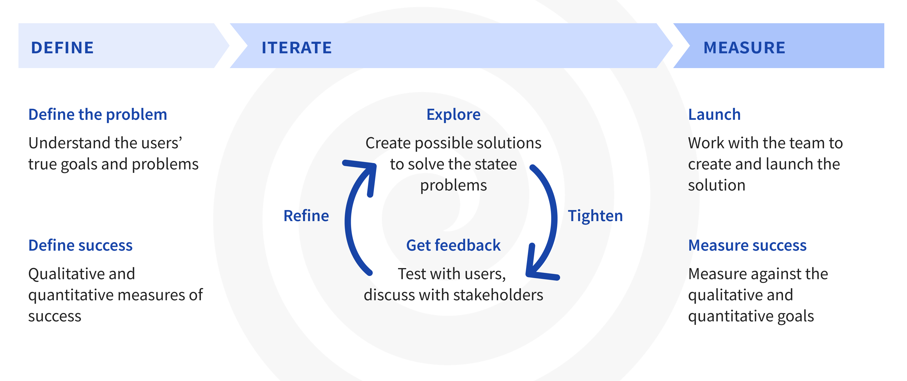
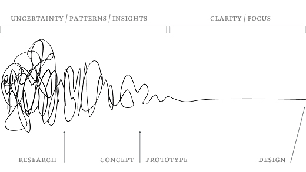
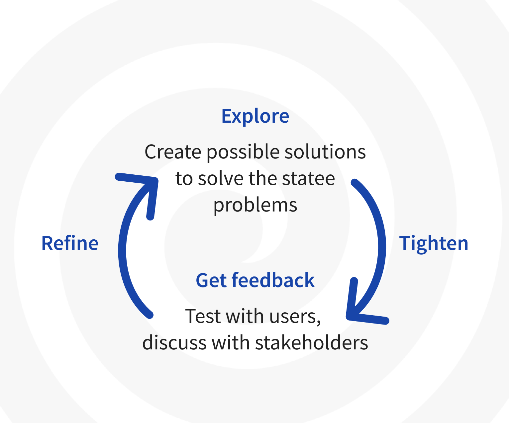

MY DESIGN PROCESS
{kind=link}
My design process is based on the principles of design thinking but adapted for my experience working as a designer in a variety of companies. It is often helped along by this handy tool: the UX Checklist. I created a similar process poster for my work at SmartRecruiters.
This process is rarely done in isolation. I usually work closely with a PM and engineering team to define and create the project, but ultimately, the design process is up to me.
No design process is as linear as we’d like to make it look on a chart, but following some basic steps and principles helps me stay on the right track through all the back and forth and last-minute considerations.
http://designsojourn.com/design-processed-explained/
Define
Defining the problem
The first and most important step in any design project is to determine the user problems to solve. Regardless of whether there is a business, or data goal behind the project, it’s impossible to create a solution without empathizing with the user’s needs problems. This involves not only identifying the issues themselves but why they occur. Below are some of the tools I use to be able to define and understand the user’s problem.
Browsing previous research studies
Often other designers, researchers, or people at the companies I’ve worked for have gathered feedback that helps me understand the problem. I’ve often found what I needed in previous research, speaking with customer success agents, or browning user feedback channels.
User surveys
Depending on the kind of questions I have, sometimes surveys are helpful tools. When creating the Private Browing App, I used this method to understand the problems behind private internet usage when we needed to understand the landscape of users’ needs.
User interviews
Often to define the problem and the reasons behind it, I interview users. Sometimes I combine this with contextual inquiries wherein I observe users perform their tasks in their usual location. For example, I watched recruiters and job fair participants interact at a job fair to inform my design for the Field Recruiting App.
Jobs to be done
Sometimes it can be helpful to understand a project in terms of the jobs to be done framework. In this method, I define the job of a product or feature to understand the user’s actual goals.
Competitive analysis
According to Jakob’s Law, users spend most of their time on other sites. In addition to giving designers and business people an idea of the market, it also helps to find patterns in similar products that users are used to. At SmartRecruiters, I used this principle in the creation of the Interview Scheduling Wizard to design a scheduling interface using common calendar patterns so users would not have to re-learn the feature.
Data on usage, page views, and clicks

Survey data for a project on a Private Browser
Data often helps me understand what features are being underused proportionally inform the core actions that drive engagement in a product. For example, as part of my work on onboarding at Atlassian, my team defined the core actions that drove new users to stick to a product.
Defining success
Once the user’s problem has been well understood, I define what success will look like for a project. This gives me a grounding idea to stick to while making tradeoffs in design options in the iteration phase.
I break the success definition down into qualitative and quantitative measures. The qualitative signals for success are usually the inverse of the problem statement, while the quantitive ones are metrics the team determines beforehand.
The last portion of the “define” section is about assumptions. These are not always surfaced in the beginning, but it’s often helpful to keep a log of them whenever they occur. Some assumptions can help guide the project, and some should be tested for validity.
Iterate
Once the problem and success are defined, I’m able to create the solution. This process involves exploring options — starting with a broad range of ideas and whittling them down to one preferred solution that fits best with the problem and success statements. This whittling is done through prototyping, user testing, and feedback with stakeholders. After each round of exploring, tightening, getting feedback, and refining, the solution should be closer to solving the problem.
Once I have confidence in a generation direction, it’s useful to create a hypothesis that can be tested. It states the problem, proposed solution, and why I think it will work.
{kind=link}
Explore
The explore phase can be done alone or in a team, but it should start with a broad range of solutions. I often employ the practice of crazy 8’s or similar ideation workshops to get myself or the team to think outside the obvious solutions.
Tighten
The resulting solutions are then transformed into higher fidelity versions or prototypes that can be discussed with the team and tested. This is often when the hypothesis is created.
Get feedback
Once I have a few solid solutions, it’s time to get feedback from the stakeholders involved, and the users. Each of these groups provides different types of feedback. Stakeholders help align on the feasibility of the solution and stay on track with the goals. User testing sessions help test the hypothesis I’ve created. Feedback is helpful in any stage of the design process, but vital here.
In my Interview Scheduling Wizard project, I gathered feedback from users and changed my solution to fit closer with their mental model of scheduling. I also worked with the engineering team to understand the feasibility of it, and as a result, changed the solution from a modal to a separate page.
Refine
Once I have feedback I can refine the solution and bring it closer to the definitions of success laid out at the beginning of the process. Often, this step involves iterating on smaller and smaller details to make sure the chosen solution covers all the edge cases. In my Private Browser project, I added more delightful touches to a simple app and paid close attention to the micro-interactions.

Working on the finer interation points for Private Browser
Measure
Once a solution is created and tested and the details are ironed out, I work with the engineering team and PM to launch the project and measure its effects later.